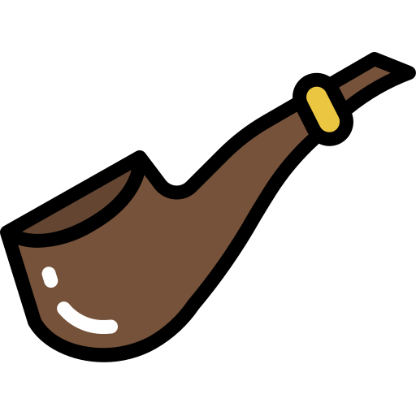

Στο μυθιστόρημα 'Σπουδή στο Κόκκινο', η λέξη Rache, από τα μεσαιωνικά γερμανικά σημαίνει:
Θύμηση
Κίνδυνος
Εκδίκηση
Θάνατος

Το ίδιο μυθιστόρημα κυκλοφόρησε στην Ελλάδα και με τον τίτλο:
Κόκκινη ραψωδία
Κόκκινο μυστήριο
Μελετώντας ένα φόνο
Κόκκινη αυταπάτη
Η τηλεοπτική σειρά με τον Jeremy Brett προβλήθηκε στην ιδιωτική τηλεόραση πρώτη φορά από το Mega Channel το έτος:
1990
1991
1992
1993
Πόσες παιδικές ταινίες παραγωγής της εταιρείας Burbank κυκλοφόρησαν;
Δύο
Τρεις
Τέσσερις
Πέντε
Ποία ήταν η πρώτη ταινία 'Sherlock Holmes' που πρωταγωνίστησε ο Basil Rathbone;
Ο Σέρλοκ Χολμς και το μυστικό όπλο
Η γυναίκα αράχνη
Τα σκυλιά των Μπάσκερβιλ
Το σπίτι του τρόμου